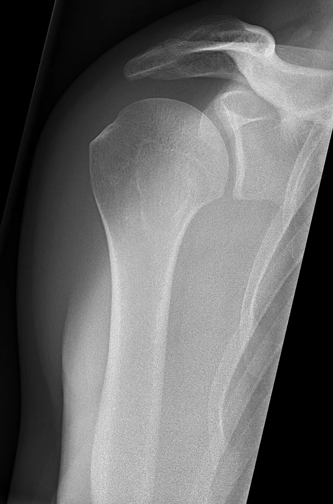
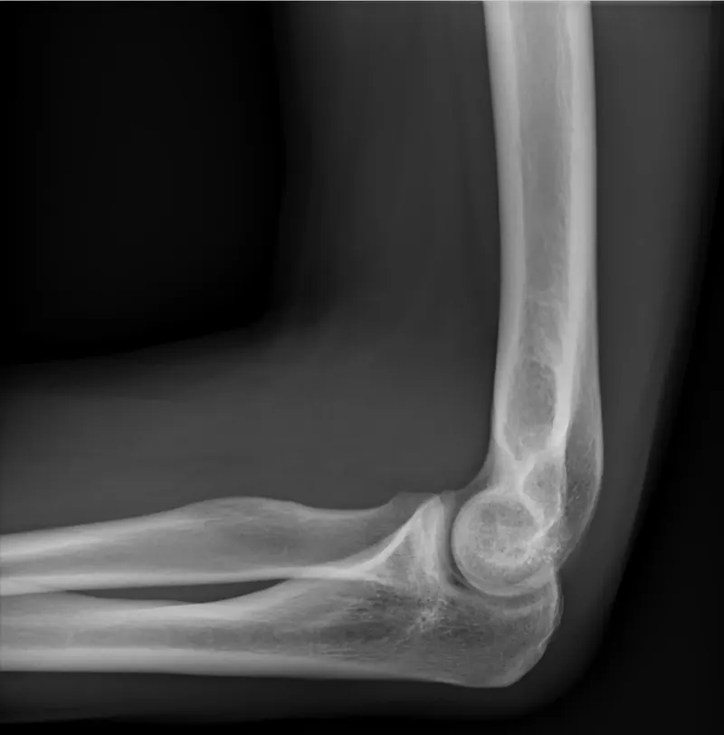
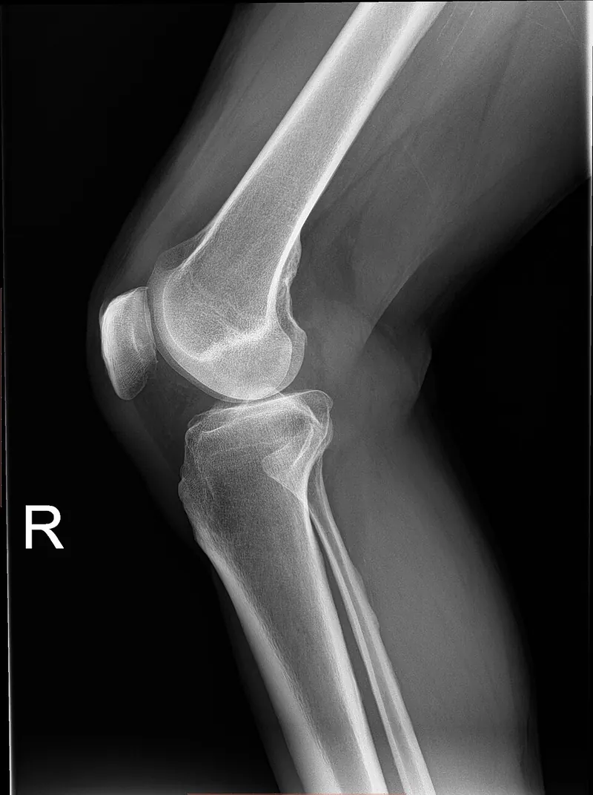

Cambridge Lower Secondary · Science 0893 · Stage 8 · Biology
Joints and Antagonistic Muscles
Ball-and-socket and hinge joints, and how antagonistic muscles such as the biceps and triceps move the bones at a hinge joint.
British & IGCSE › Checkpoint 8 › Checkpoint 8 Science — Complete Course
- Identify ball-and-socket joints and hinge joints in the human skeleton (8Bs.01)
- Explain how antagonistic muscles move the bones at a hinge joint, such as the biceps and triceps at the elbow (8Bs.01)
- Skills used on this page: analogies and models, means, planning and evaluating (8TWSm.01, 8TWSm.02, 8TWSa.04)
Your skeleton has more than 200 bones. It supports your body, protects organs (the skull protects the brain, the ribs protect the heart and lungs), makes blood cells inside some bones, and — with muscles — lets you move. Bones are rigid, so the body can only bend where two bones meet. These places are joints.
| Word / phrase | Meaning / use |
|---|---|
| skeleton | الهيكل العظمي — all the bones of the body |
| joint | مفصل — where two bones meet |
| ball-and-socket joint | مفصل كروي (كرة وتجويف) — moves in all directions, e.g. shoulder, hip |
| hinge joint | مفصل رزّي (زي مفصّلة الباب) — moves in one direction, e.g. elbow, knee |
| fixed joint | مفصل ثابت — no movement, e.g. skull |
| cartilage | غضروف — smooth layer on bone ends; stops rubbing |
| ligament | رباط — joins bone to bone |
| tendon | وتر — joins muscle to bone |
| contract | ينقبض — the muscle gets shorter and pulls |
| relax | ينبسط / يرتخي — the muscle stops pulling and can be stretched |
| antagonistic pair | زوج متضاد — two muscles that move a bone in opposite directions |
| biceps / triceps | العضلة ذات الرأسين / ذات الثلاث رؤوس — front / back of the upper arm |
Types of joint
At Stage 8 you must identify two types of moving joint: ball-and-socket and hinge. You should also know that some joints, such as those between the bones of the skull, are fixed: they do not move at all.
| Ball-and-socket joint | Hinge joint | |
|---|---|---|
| Shape | A rounded end (ball) of one bone fits into a cup-shaped hollow (socket) of another. | A rounded end of one bone fits against a curved groove in the other, like a door hinge. |
| Movement | In all directions (forwards, backwards, sideways) and it can rotate. | In one direction only — bending and straightening (one plane). |
| Examples | shoulder, hip | elbow, knee (also the joints in the fingers and toes) |
| Analogy | a joystick or a ball in a cup | a door on its hinges |


Inside a moving joint
- Cartilage covers the ends of the bones. It is smooth and slightly soft, so the bones do not rub (less friction) and shocks are absorbed when you run or jump.
- Ligaments are strong, slightly stretchy bands that join bone to bone and hold the joint together.
- A slippery liquid inside the joint (synovial fluid) lubricates it, like oil in a door hinge.
- Tendons are strong cords that join muscle to bone. They do not stretch, so when a muscle shortens the pull is passed to the bone.

Memory trick: Ligament Links bone to bone. Tendon Ties muscle to bone.
Muscles can only pull
A muscle moves a bone by contracting: it gets shorter and fatter and pulls on the bone through its tendon. When it relaxes, it stops pulling and can be stretched back to its long, thin shape. A muscle can never push. So one muscle can move a bone in one direction only. To move the bone back again, you need a second muscle on the other side of the joint.
Two muscles that move the same bone in opposite directions are called an antagonistic pair. When one muscle contracts, the other relaxes.
Biceps and triceps at the elbow (a hinge joint)
| Movement | Biceps (front of upper arm) | Triceps (back of upper arm) | What happens to the forearm |
|---|---|---|---|
| Bending the arm (raising the forearm) | contracts — shorter and fatter | relaxes — stretched | The biceps pulls the forearm up; the elbow (hinge) bends. |
| Straightening the arm (lowering the forearm) | relaxes — stretched | contracts — shorter and fatter | The triceps pulls the forearm down; the arm straightens. |
- The brain sends a signal to the biceps.
- The biceps contracts (gets shorter).
- Its tendon is attached to the forearm just below the elbow, so it pulls the forearm up.
- The elbow joint bends — like a door swinging on its hinge.
- The triceps relaxes and is stretched as the arm bends.
- To straighten the arm, the triceps contracts and pulls the forearm down, and the biceps relaxes.
The knee works the same way. The hamstrings at the back of the thigh contract to bend the knee; the quadriceps at the front of the thigh contract to straighten it. Hamstrings and quadriceps are another antagonistic pair.
العضلة عمرها ما بتزق العظمة — هي بتنقبض (contract) فتقصر وتشدّ. عشان كده العضلات بتشتغل أزواج متضادة (antagonistic pair): في الكوع، الـ biceps قدّام بتنقبض فتثني الدراع، والـ triceps ورا بتنقبض فتفرد الدراع. لما واحدة تنقبض، التانية ترتخي (relaxes).
Model (analogy): you can model the arm with two pieces of card joined by a split pin (the elbow) and two elastic bands or strings for the muscles. Pulling the front string raises the "forearm"; pulling the back string lowers it. The model shows why two muscles are needed. Its limitations: strings do not contract by themselves, the card joint has no cartilage or ligaments, and the real biceps is attached at the shoulder by two tendons.
Worked examples
Worked example 1 — identifying joints Name the type of joint at (a) the hip, (b) the elbow, (c) the knee. [3]
- (a) ball-and-socket
- (b) hinge
- (c) hinge
Common mistake: calling the knee a ball-and-socket joint because it is big. Ask: "Can it move in all directions?" The knee only bends and straightens.
Worked example 2 — explaining a movement Explain how the muscles in the upper arm bend the arm at the elbow. [3]
- The biceps contracts (shortens) [1].
- It pulls on the forearm (through a tendon), so the forearm moves up / the arm bends [1].
- At the same time the triceps relaxes [1].
Common mistake: "The triceps pushes the arm up." Muscles never push.
Worked example 3 — why pairs? Muscles usually work in pairs. Explain why. [2]
- Muscles can only pull (contract); they cannot push [1].
- So a second muscle is needed to pull the bone back the other way / one muscle bends the joint and the other straightens it [1].
Worked example 4 — the knee A student kicks a ball. Just before the kick her knee is bent; then the leg straightens. (a) Which muscle contracts to straighten the leg? [1] (b) What happens to the hamstrings? [1] (c) What type of joint is the knee? [1]
- (a) the quadriceps (front of the thigh)
- (b) they relax (and are stretched)
- (c) a hinge joint
Worked example 5 — a model and its limitation Omar builds a model arm with card, a split pin and two strings, A on the front and B on the back. (a) Which string models the triceps? [1] (b) What does the split pin represent? [1] (c) Give one way the model is different from a real arm. [1]
- (a) B — the triceps is at the back of the upper arm.
- (b) the elbow (hinge) joint.
- (c) Any one: strings do not contract on their own; muscles get fatter when they contract but strings do not; there is no cartilage/ligaments in the model; the model only moves on a flat card.
Worked example 6 — comparing joints The shoulder can move the arm in a full circle, but the elbow cannot. Explain this using the types of joint. [2]
- The shoulder is a ball-and-socket joint, which allows movement in all directions / rotation [1].
- The elbow is a hinge joint, which only moves in one direction (bending and straightening) [1].
- Saying a muscle pushes. Muscles only pull (contract).
- Saying a relaxed muscle "pushes back" or "gets longer and pulls". Relaxing means it stops pulling and is stretched by the other muscle.
- Mixing up biceps (front, bends the arm) and triceps (back, straightens the arm).
- Mixing up tendons (muscle to bone) and ligaments (bone to bone).
- Calling the knee or elbow a ball-and-socket joint.
- Writing "the muscle contracts and relaxes" without saying WHICH muscle does which.
- A diagram of an arm with muscles labelled with letters: "Which muscle contracts to raise the forearm?" — find which side of the joint pulls the forearm up.
- "Name the type of joint at the shoulder / knee." One word or phrase — spell ball-and-socket in full.
- "Explain how antagonistic muscles…" — 2 or 3 marks: name the muscle that contracts, say it pulls the bone, say the other relaxes.
- Draw lines to match joints to examples, or tick the hinge joints in a list.
- Model questions: what each part of a model represents, and one limitation.
Practice
- Ball-and-socket joints (shoulder, hip) move in all directions and rotate; hinge joints (elbow, knee) move in one direction only.
- Muscles can only pull (contract); they cannot push.
- Antagonistic pair: when one muscle contracts, the other relaxes.
- Elbow: biceps contracts → arm bends; triceps contracts → arm straightens.
- Tendons join muscle to bone; ligaments join bone to bone; cartilage stops bones rubbing.
All pages in this course
Start here
- Stage 8 Science: The Tests and How to Prepare
- Thinking and Working Scientifically: Models, Investigations and Analysing Results
Biology
- Joints and Antagonistic Muscles
- Blood and Its Components
- Breathing, Gas Exchange and Diffusion in the Lungs
- A Balanced Diet, Energy Stores and Lifestyle
- Aerobic Respiration
- Ecosystems, Bioaccumulation and Invasive Species
Chemistry
- The Structure of the Atom
- Purity, Concentration and Chromatography
- Word Equations, Exothermic and Endothermic Reactions
- The Reactivity of Metals
- Impure Products and Solubility of Salts
Physics
- Speed and Distance–Time Graphs
- Balanced and Unbalanced Forces, and Moments
- Pressure, Particles and Diffusion
- Reflection and Refraction
- Dispersion and Colour
- Magnetic Fields and Electromagnets
Earth and space
- The Earth's Magnetic Field and Earth's Resources
- Climate, Weather and Climate Change
- Galaxies and Asteroids
Practice tests